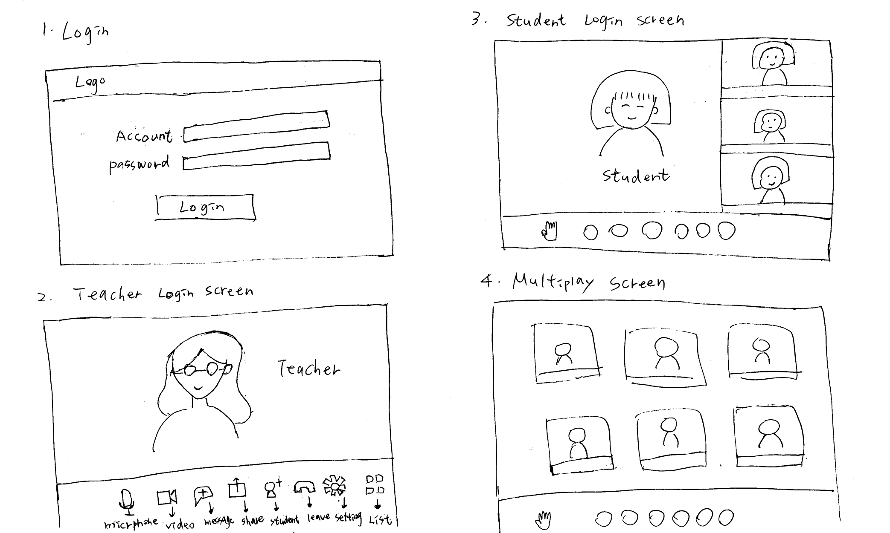
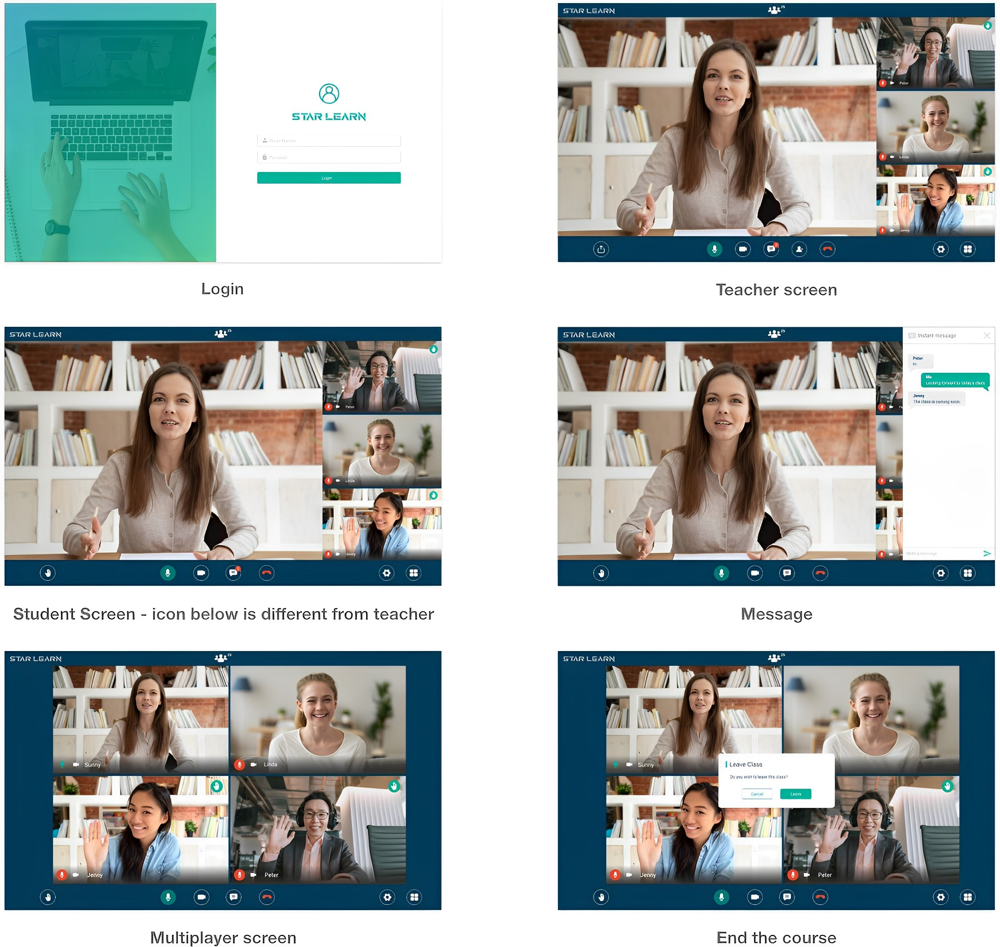

觀光發展協會線上教學-IOS & Website
UX Research・UI・Prototype・Coding
專案項目 Project Details
描述 Description－
2020滾動式數位轉型觀光振興培訓教育專案，主要培訓人員為旅行業、觀光旅館業、旅館業及觀光遊業之從業人員，因為疫情的關係從原本的實體課程改成線上教學課程，因此產生了使用動機，原本的通訊系統應用層面更為擴大進而提升整體的操作體驗。
本專案以使用者觀點切入，以使用者研究，從情境需求作為第一階段規劃。
第一階段的目標 First stage target－
從部份實體課程轉到線上，老師可以用視訊的方式開課和教學，學生不受空間影響上課，管理者後台可以管理目前課程的狀況。
情境 User story－
- 身為一個老師，在疫情期間需要把實體課程改線上課程，因此我可以不受空間限制達到教學目的。
- 身為一個學生，原本安排課程時間受到疫情影響，改轉線上課程，因此學習不會受到影響。
- 身為一個管理者，藉由後台管理的狀況，因此我可以掌握老師與學生的上課狀況，和課程管理。
具備哪些功能？功能與功能之間的關係是什麼 Relationship between elements－


結合白版圖整理的功能和關係圖
服務流程圖 Flow Chart
-
服務流程圖繪製的元素有：
* 用戶的目標
* 為了完成目標，必要經歷的關鍵任務
* 關鍵任務如何與利害關係人合作來完成

上圖是用情境作為範例
服務流程圖展示用戶如何達成目標，以及哪些角色參與了任務。 - 角色目標：
老師，學生，管理者 - 定義任務：
選課／備課，Email 得到帳密，上課 -
使用可用性三原則確認需求，達成共識：

將用戶研究的結果與用戶的任務分析轉換為服務流程圖
簡單的功能跟開發時間越少得越往前排。
設計流程 Design Flow
-
草圖：
我通常以草圖開始設計過程，快速產生畫面，在這過程中可以知道哪些問題，跟PM討論哪寫功能是要增加或是刪減，有效率的討論方式。
前台－老師和學生的教學草圖
-
Wireframes：
用低保真的交互原型，找尋3個不同的角色目標來測試，測試是否有符合情境與解決需求以及易用性測試。前台－老師和學生的教學畫面
會輸出一份文件請受測者直接點擊畫面。
後台－管理者 管理上課程時間內容和學生資料
協助我跟工程師溝通和確認功能與流程是否可行。
設計 UI Design
-
前台：
經過上面Wireframes確認功能沒問題後，開始發想視覺，主要風格清新、乾淨、簡潔、舒服、穩重、科技，在過程中定義設計樣式，元素和顏色。使用Adobe XD 設計 UI 外觀，幫助使用者在操作介面上能直覺達到目標。
考慮到工程師事後需要 UI 元件庫，也一併整理 UI system。
 -
後台：
參考 element UI https://element.eleme.io/#/zh-CN ，在開發時間不足的情況下，會使用有open source UI 元件庫，直接在 VScode 進行前端畫面開發。 流程圖畫完確認功能沒問題，進 VScode 使用 HTML、SCSS、簡易JS，製作動態，協助工程師後續製作。
流程 UI Flow
前後台 overflow，把畫面每個步驟、遇到狀況、操作流程列出來，方便工程師理解，也檢視使用者操作是否流暢，定義交互，各種狀態錯誤訊息的顯示。

前台－老師和學生的教學操作畫面步驟

後台－每個操作畫面步驟會遇到的功能和解說
元件庫 UI System
從中學習到什麼？
分析使用者假設用戶情境，使用服務流程圖幫助各部門利害關係人達到現階段共識，釐清問題方向，在草圖快速確認細節需求和測試，到最後設計畫面和歸納UI System與工程師合作。